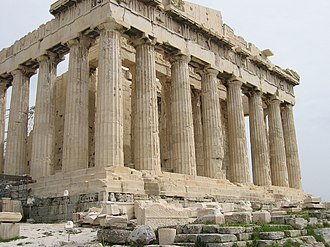
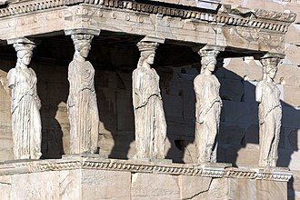
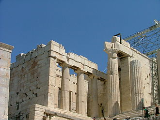
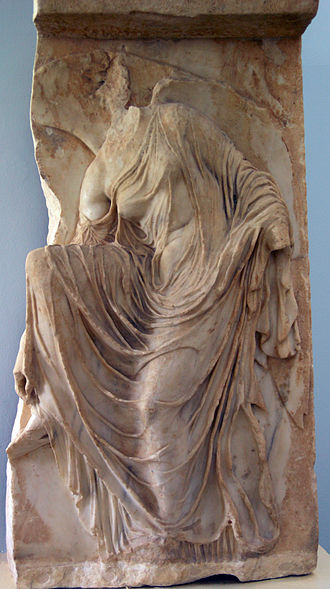
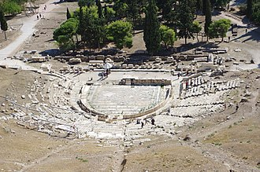

L'acròpoli d'Atenes és l'acròpoli grega més important. L'Acròpoli era, literalment, la «ciutat alta» i estava present a la majoria de ciutats gregues, amb una doble funció: defensiva i com a seu dels principals llocs de culte.L'Acròpoli d'Atenes està situada sobre un turó a uns 165 metres per sobre del nivell de la ciutat. També és coneguda com a Cecròpia en honor del llegendari home serp, Cècrops, rei d'Atenes
Una gran part dels edificis arquitectònics de què consta l'Acròpoli es van edificar durant l'època de Pèricles (499-429 aC). La plataforma estava envoltada per una muralla construïda pels pelasgs, que en va substituir una altra d'anterior més primitiva; més tard es va construir un temple, l'Hekatómpedon, que va ser destruït pel rei persa Xerxes. Sobre les seves ruïnes Pèricles va aixecar el Partenó junt amb la resta dels edificis repartits per tot el turó. Va arribar en força bon estat fins al segle xvi, quan a causa de la dominació otomana el Partenó es va convertir en mesquita, l'Erectèon en harem i els Propileus en polvorí.
Existeixen evidències arqueològiques de l'ocupació i l'ús del turó de l'Acròpoli a l'edat del bronze, quan s'hi alçava un palau, fa aproximadament 6.000 anys. En aquella època, estava envoltada per un mur gruixut (entre 4,5 i 6 metres) que constava de paraments construïts amb grans carreus de pedres consolidats amb un morter primigeni anomenat émplekton. L'entrada principal mirava cap a l'est. Al nord-oest hi havia una entrada, a la qual s'arribava mitjançant una escala d'aproximadament quinze graons excavats a la roca.
Després de l'edat fosca grega, l'Acròpoli va deixar de ser un lloc de residència i es va convertir en el centre de culte de la ciutat d'Atenes. Després de la invasió dòrica del segle x aC, un nou edifici denominat Enneàpylon («nou portes») va cobrir la font. Traces de cases micèniques demostren que l'Acròpoli estigué permanentment habitada durant aquesta època i que va continuar així durant els períodes foscs que van precedir el naixement de la polis atenesa el segle viii aC.
L'Acròpoli fortificada va servir com ciutadella per Pisístrat. Aquest va ser derrocat el 510 aC per una revolució popular que va tenir el suport dels espartans i se'n van demolir els murs. Al mateix lloc, cap al 480 aC s'hi van refugiar antics habitants d'Atenes durant les Guerres Mèdiques contra les tropes perses, els quals van construir defenses de fusta a les parts fetes malbé de la muralla, que no van aturar les tropes invasores del rei Xerxes I de Pèrsia en la seva conquesta de l'Acròpoli, amb el saqueig i la crema dels temples més grans.
La major part dels grans temples van ser reconstruïts sota el lideratge de Pèricles durant l'edat daurada d'Atenes (460-430 aC), que utilitzaria el tribut dels membres de la Lliga de Delos per construir el Partenó i altres monuments de la Grècia clàssica. Durant el segle v aC, l'Acròpoli va obtenir la seva forma final.Fídies, un gran escultor atenès, i Ictinos i Cal·lícrates, dos famosos arquitectes, van ser els responsables de la reconstrucció del Partenó al costat sud de la plana, sobre els fonaments de l'antic edifici de Temístocles. La construcció va durar dotze anys, del 448 aC al 436 aC
Amb la conquesta de l'imperi Persa, Alexandre el Gran, fill i hereu del rei Filip II de Macedònia, va passar a dominar tota la Mediterrània. La llibertat de Grècia fou proclamada als Jocs Ístmics, però en realitat el que es va fer fou un traspàs de l'hegemonia de Macedònia a Roma. El 22 de juny de 168 aC es va lliurar la batalla de Pidna, que va posar fi a la monarquia macedònica.Herodes Àtic, cònsol romà, escrivia al seu amic Ciceró parlant sobre Atenes amb gran entusiasme. Molts italians viatjaven a Atenes per visitar la ciutat, i els governants, junt amb els emperadors, van augmentar els monuments dins i fora de l'Acròpoli. Per exemple, l'any 161 es va construir gràcies a Herodes Àtic un odèon al costat del teatre de Dionís. Durant la invasió dels hèruls de l'any 267, aquest teatre va ser destruït i més tard la seva estructura va passar a formar part de les muralles. En passar els segles, la seva part inferior va quedar amagada per les bardisses, cosa que va fer pensar al viatger Niccolò de Martini que es tractava d'un pont. Al segle xix es van iniciar les excavacions i finalment va ser restaurat. Des de l'any 1957 s'hi realitzen normalment representacions i festivals.
l mègaron (Μέγαρον), mot grec però de probable derivació semítica,[cal citació] és el «Gran Saló» que es trobava als palaus de la civilització micènica, a Grècia i Anatòlia. Acostumava a estar en un costat del pati central i davant de l'altar. Constava de tres parts: el pòrtic obert amb dues columnes, un vestíbul o avantsala i la sala principal, també anomenada naos.
L'Acròpoli té una gran activitat constructora durant la segona meitat del segle vi aC. Atenes presenta una ciutat dispersa però dominada per l'Acròpoli, l'Hekatómpedon es va ampliar i es va realitzar una stoà amb un frontó de marbre mostrant un relleu amb les figures quasi independents de la lluita dels déus contra els gegants.
| Monument | Quan va ser construit | Foto | Descripció |
| Partenó | Entre 448 aC i 430 aC |  | El Partenó va ser erigit entre els anys 448 aC i 430 aC, sobre els fonaments de l'Hekatómpedon, amb el projecte dels arquitectes Ictinos i Cal·lícrates. L'interior estava dividit en dues sales independents, amb l'entrada per cada façana oposada de l'edifici. La sala oriental era la més gran, dividida per columnes dòriques en tres naus, i era on es trobava l'escultura d'Atena de Fídies. |
| Erectèon | 421 aC |  | Fou edificat en temps de Pèricles; va ser començat l'any 421 aC, durant la treva de la Pau de Nícies a la Guerra del Peloponès, reemplaçant l'antic temple arcaic d'Atena que va ser destruït pels perses durant les guerres mèdiques. |
| Propileus | 437 aC |  | Els Propileus eren la gran entrada a l'Acròpoli d'Atenes. Foren construïts a partir de l'any 437 aC per l'arquitecte Mnèsicles, en un terreny molt accidentat. Les sis columnes de l'entrada són dòriques, tant a la façana davantera com les sis de la part posterior. Bastit amb marbre pentèlic, consta d'un vestíbul de 24 x 18 metres. A l'interior, un mur amb cinc portes el divideix en dues parts; l'occidental, més gran, té dues fileres de tres columnes jòniques que formen tres naus. |
| Temple de Nike Àptera | Entre 421 aC i el 410 aC |  | Al costat sud dels Propileus es troba el temple d'Atena Nike ('Atena victoriosa') o Nike Àptera ('Victòria sense ales'). La construcció data de l'any 421 aC i el 410 aC. Aquest monument emplaçat a l'entrada de l'Acròpoli volia simbolitzar que, una vegada sense ales, la deessa no es mouria d'Atenes |
| Teatre de Dionís | Durant el segle IV aC |  | Els actors estaven col·locats en una plataforma, hi havia una part interior on es canviaven d'indumentària, i els espectadors es col·locaven al pendent del turó, lloc on s'acostumaven a construir els teatres. A la fi del segle v aC van ser substituïdes les primitives plataformes de fusta per graderies de pedra. A la part central de les primeres grades hi havia 67 seients que van ser realitzats, posteriorment, en marbre decorat i estaven reservats per als sacerdots |
A l'època romana van ser diversos emperadors o personatges destacats els que van reformar o realitzar noves construccions a l'Acròpoli d'Atenes. Durant el mandat de Claudi, l'any 52 es va fer una reforma de la rampa d'accés.Al segle iii, per ordre de Flavi Septimi, es va construir l'actualment anomenada Porta Beulé com primera entrada de l'Acròpoli abans dels Propileus; consta de dues torres de nou metres d'alçada, una a cada costat de la porta. Aquesta porta va ser descoberta per l'arqueòleg francès Charles Ernest Beulé l'any 1852. A l'esquerra de l'escalinata, abans dels Propileus, es troba la Torre d'Agripa, de prop de catorze metres d'alçada, de marbre gris, on l'any 178 aC s'havia col·locat una estàtua d'Èumenes II sobre una quadriga de bronze; posteriorment se n'hi va col·locar una d'Agripa, gendre de l'emperador August. A l'època d'aquest emperador, l'any 27 aC, es va edificar el temple de planta circular dedicat a Roma i August prop del Partenó, envoltat de nou columnes de marbre
Durant els gairebé quatre segles d'ocupació turca no es van dur a terme excavacions ni reformes a l'Acròpoli. La desinformació va fer fins i tot que s'anomenés el Partenó com «Panteó» i temple d'un déu desconegut a Europa, segons consta en el volum Turcograecia, publicat per M. Kraus el 1584. L'ambaixador de Lluís XIII de França a Constantinoble va descriure Atenes en el seu llibre Voyage du Levant (París, 1632), on relata que el Partenó «es trobava com si acabés de fer-se».